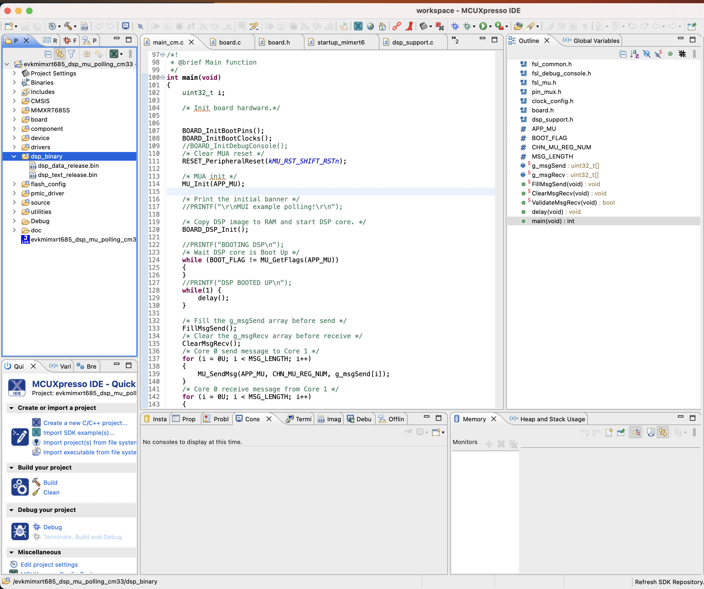

Cadence Xtensa Backend#
In this tutorial we will walk you through the process of getting setup to build ExecuTorch for Cadence Xtensa DSPs and running models on them.
Cadence is both a hardware and software vendor, providing solutions for many computational workloads, including to run on power-limited embedded devices. The Cadence backend supports multiple DSP families optimized for different workloads:
HiFi Audio DSPs (HiFi4/HiFi5): Optimized for audio processing, speech recognition, and wake word detection
Fusion G3 DSPs: General-purpose AI acceleration
Vision P-Series DSPs: Specialized for computer vision and CNN workloads
In addition to the chip, the HiFi4 Neural Network Library (nnlib) offers an optimized set of library functions commonly used in NN processing that we utilize in this example to demonstrate how common operations can be accelerated.
For an overview of the Cadence ExecuTorch integration with performance benchmarks, see the blog post: Running Optimized PyTorch Models on Cadence DSPs with ExecuTorch.
On top of being able to run on the Xtensa HiFi4 DSP, another goal of this tutorial is to demonstrate how portable ExecuTorch is and its ability to run on a low-power embedded device such as the Xtensa HiFi4 DSP. This workflow does not require any delegates, it uses custom operators and compiler passes to enhance the model and make it more suitable to running on Xtensa HiFi4 DSPs. A custom quantizer is used to represent activations and weights as uint8 instead of float, and call appropriate operators. Finally, custom kernels optimized with Xtensa intrinsics provide runtime acceleration.
In this tutorial you will learn how to export a quantized model with a linear operation targeted for the Xtensa HiFi4 DSP.
You will also learn how to compile and deploy the ExecuTorch runtime with the kernels required for running the quantized model generated in the previous step on the Xtensa HiFi4 DSP.
Note
The linux part of this tutorial has been designed and tested on Ubuntu 22.04 LTS, and requires glibc 2.34. Workarounds are available for other distributions, but will not be covered in this tutorial.
Prerequisites (Hardware and Software)#
In order to be able to succesfully build and run ExecuTorch on a Xtensa HiFi4 DSP you’ll need the following hardware and software components.
Hardware#
Software#
x86-64 Linux system (For compiling the DSP binaries)
-
This IDE is supported on multiple platforms including MacOS. You can use it on any of the supported platforms as you’ll only be using this to flash the board with the DSP images that you’ll be building later on in this tutorial.
-
Needed to flash the board with the firmware images. You can install this on the same platform that you installed the MCUXpresso IDE on.
Note: depending on the version of the NXP board, another probe than JLink might be installed. In any case, flashing is done using the MCUXpresso IDE in a similar way.
-
Download this SDK to your Linux machine, extract it and take a note of the path where you store it. You’ll need this later.
-
Download this to your Linux machine. This is needed to build ExecuTorch for the HiFi4 DSP.
For cases with optimized kernels, the nnlib repo.
Setting up Developer Environment#
Step 1. In order to be able to successfully install all the software components specified above users will need to go through the NXP tutorial linked below. Although the tutorial itself walks through a Windows setup, most of the steps translate over to a Linux installation too.
NXP tutorial on setting up the board and dev environment
Note
Before proceeding forward to the next section users should be able to succesfullly flash the dsp_mu_polling_cm33 sample application from the tutorial above and notice output on the UART console indicating that the Cortex-M33 and HiFi4 DSP are talking to each other.
Step 2. Make sure you have completed the ExecuTorch setup tutorials linked to at the top of this page.
Working Tree Description#
The working tree is:
executorch
├── backends
│ └── cadence
│ ├── aot # Ahead-of-Time compilation tools
│ │ ├── compiler.py # Main compilation API
│ │ ├── export_example.py # Export workflow example
│ │ ├── quantizer/ # Quantization infrastructure
│ │ │ ├── quantizer.py # Multiple quantizer implementations
│ │ │ ├── patterns.py # Quantization patterns
│ │ │ └── fusion_pass.py # Op fusion pass
│ │ ├── passes.py # Graph optimization passes
│ │ ├── functions.yaml # Generic operator definitions
│ │ ├── functions_hifi.yaml # HiFi-specific definitions
│ │ ├── functions_fusion_g3.yaml # Fusion G3 definitions
│ │ └── functions_vision.yaml # Vision-specific definitions
│ ├── runtime/ # Runtime execution infrastructure
│ ├── utils/ # Build utilities (FACTO, header gen)
│ ├── hifi/ # HiFi Audio DSP family (70+ ops)
│ │ ├── kernels # Optimized HiFi4/HiFi5 kernels
│ │ ├── operators # HiFi operator implementations
│ │ └── third-party
│ │ └── nnlib # Cadence NNLIB integration
│ ├── fusion_g3/ # Fusion G3 DSP family (25+ ops)
│ │ ├── kernels
│ │ ├── operators
│ │ └── third-party
│ │ └── nnlib
│ ├── vision/ # Vision P-Series DSP family (17+ ops)
│ │ ├── kernels
│ │ ├── operators
│ │ └── third-party # Vision-specific library
│ └── generic/ # Generic fallback implementations (15+ ops)
│ └── operators
└── examples
└── cadence
├── models # 9 example models
│ ├── rnnt_encoder.py # ASR encoder (ConvEmformer)
│ ├── rnnt_predictor.py # ASR predictor
│ ├── rnnt_joiner.py # ASR joiner
│ ├── wav2vec2.py # Self-supervised speech
│ ├── mobilenet_v2.py # Image classification
│ ├── resnet18.py # Image classification
│ ├── resnet50.py # Image classification
│ ├── vision_transformer.py # ViT
│ └── babyllama.py # Small LLM
└── operators # Operator test examples
├── test_add_op.py # Add operation tests
├── test_quantized_linear_op.py
├── test_quantized_conv1d_op.py
├── test_requantize_op.py
└── test_g3_ops.py # FACTO-based G3 tests
AoT (Ahead-of-Time) Components:
The AoT folder contains all of the python scripts and functions needed to export the model to an ExecuTorch .pte file. The main components include:
Compiler API (compiler.py): High-level APIs for model compilation including
trace(),quantize_pt2(),export_to_edge(), andexport_to_cadence().Quantizer (quantizer/quantizer.py): Multiple quantization strategies:
CadenceDefaultQuantizer: Standard A8W8 (8-bit asymmetric activations, 8-bit weights)CadenceWithLayerNormQuantizer: Adds layer normalization supportCadenceWakeWordQuantizer: Optimized for audio wake word modelsCadenceW8A32MixedQuantizer: Experimental mixed precision (8-bit weights, 32-bit activations)CadenceWithSoftmaxQuantizer: Includes A16 (16-bit activation) softmax
Compiler Passes (passes.py): Graph optimization passes including operator fusion, replacement, simplification, and reordering.
Operator Registrations (ops_registrations.py): Registers 100+ custom Cadence operators with meta kernels for shape inference. Supports quantized operations for conv1d/2d, linear, matmul, layer norm, and more.
Export Example (export_example.py): Reference implementation demonstrating the complete export workflow from model to
.ptefile.
DSP Family-Specific Implementations:
Each DSP family has its own optimized operator and kernel implementations:
HiFi: Extensive support for quantized convolutions (1D/2D, depthwise, dilated), linear, matmul, layer norm, ReLU, add, and more. Uses Cadence NNLIB for optimized primitives.
Fusion G3: General-purpose operations including arithmetic (add, sub, mul, div), activations (sigmoid, tanh, softmax), layer normalization, and tensor manipulation.
Vision: Vision-focused operations including quantized conv, linear, matmul, im2row transformation, and softmax with custom vision library.
Generic: Reference implementations used as fallback when DSP-specific optimizations aren’t available.
Kernels:
The kernels folders contain optimized implementations that use Xtensa intrinsics to deliver high performance at low power. Each DSP family has its own kernel implementations tuned for the specific architecture characteristics.
Build#
In this step, you will generate the ExecuTorch program from different models. You’ll then use this Program (the .pte file) during the runtime build step to bake this Program into the DSP image.
Model Export Examples#
The Cadence backend provides multiple example models covering different use cases:
Simple Model:
The first, simple model is meant to test that all components of this tutorial are working properly, and simply does an add operation. The generated file is called add.pte.
cd executorch
python3 -m examples.portable.scripts.export --model_name="add"
Quantized Operators:
Test individual quantized operations:
Quantized Linear: Linear operation (32→16 features). Linear is the backbone of most ASR models.
python3 -m examples.cadence.operators.test_quantized_linear_op
Quantized Conv1D: Conv1d operation (8→16 channels). Important for wake word and denoising models.
python3 -m examples.cadence.operators.test_quantized_conv1d_op
Requantize Operation: Tests dtype conversion between different quantized types.
python3 -m examples.cadence.operators.test_requantize_op
In all cases the generated file is called CadenceDemoModel.pte.
Speech/Audio Models:
The torchaudio RNNT-emformer model is an Automatic Speech Recognition (ASR) model, comprised of three different submodels:
RNNT Predictor: Sequence of basic ops (embedding, ReLU, linear, layer norm)
python3 -m examples.cadence.models.rnnt_predictor
RNNT Encoder: ConvEmformer-based encoder with time reduction and transformer layers
python3 -m examples.cadence.models.rnnt_encoder
RNNT Joiner: Joint network combining encoder and predictor outputs
python3 -m examples.cadence.models.rnnt_joiner
Wav2Vec 2.0: Self-supervised speech representation model
python3 -m examples.cadence.models.wav2vec2
Computer Vision Models:
MobileNet V2: Efficient image classification
python3 -m examples.cadence.models.mobilenet_v2
ResNet-18: Image classification
python3 -m examples.cadence.models.resnet18
ResNet-50: Deeper image classification
python3 -m examples.cadence.models.resnet50
Vision Transformer (ViT): Transformer-based vision model
python3 -m examples.cadence.models.vision_transformer
Language Model:
Baby LLaMA: Small LLM for testing transformer operations on DSP
python3 -m examples.cadence.models.babyllama
All model exports generate CadenceDemoModel.pte files ready for deployment.
Runtime#
Building the DSP firmware image In this step, you’ll be building the DSP firmware image that consists of the sample ExecuTorch runner along with the Program generated from the previous step. This image when loaded onto the DSP will run through the model that this Program consists of.
Step 1. Configure the environment variables needed to point to the Xtensa toolchain that you have installed in the previous step. The three environment variables that need to be set include:
# Directory in which the Xtensa toolchain was installed
export XTENSA_TOOLCHAIN=/home/user_name/cadence/XtDevTools/install/tools
# The version of the toolchain that was installed. This is essentially the name of the directory
# that is present in the XTENSA_TOOLCHAIN directory from above.
export TOOLCHAIN_VER=RI-2023.11-linux
# The Xtensa core that you're targeting.
# For HiFi4 (NXP RT600):
export XTENSA_CORE=VANILLA_HIFI
# For Fusion G3:
# export XTENSA_CORE=VANILLA_G3
# For Vision P6:
# export XTENSA_CORE=VANILLA_VISION
Note
The Cadence backend supports multiple DSP families:
HiFi Audio DSPs (HiFi4/HiFi5): Core
VANILLA_HIFI, enable with-DEXECUTORCH_NNLIB_OPT=ONFusion G3 DSPs: Core
VANILLA_G3, enable with-DEXECUTORCH_FUSION_G3_OPT=ONVision P-Series DSPs: Core
VANILLA_VISION, enable with-DEXECUTORCH_VISION_OPT=ON
Step 2. Clone the nnlib repo, which contains optimized kernels and primitives for HiFi4 DSPs, with git clone git@github.com:foss-xtensa/nnlib-hifi4.git.
Step 3. Run the CMake build. In order to run the CMake build, you need the path to the following:
The Program generated in the previous step
Path to the NXP SDK root. This should have been installed already in the Setting up Developer Environment section. This is the directory that contains the folders such as boards, components, devices, and other.
cd executorch
./install_executorch.sh --clean
mkdir cmake-out
# prebuild and install executorch library
cmake -DCMAKE_TOOLCHAIN_FILE=<path_to_executorch>/backends/cadence/cadence.cmake \
-DCMAKE_INSTALL_PREFIX=cmake-out \
-DCMAKE_BUILD_TYPE=Debug \
-DPYTHON_EXECUTABLE=python3 \
-DEXECUTORCH_BUILD_EXTENSION_RUNNER_UTIL=ON \
-DEXECUTORCH_BUILD_EXECUTOR_RUNNER=OFF \
-DEXECUTORCH_BUILD_PTHREADPOOL=OFF \
-DEXECUTORCH_BUILD_CPUINFO=OFF \
-Bcmake-out .
cmake --build cmake-out -j<num_cores> --target install --config Debug
# build cadence runner
cmake -DCMAKE_BUILD_TYPE=Debug \
-DCMAKE_TOOLCHAIN_FILE=<path_to_executorch>/examples/backends/cadence.cmake \
-DCMAKE_PREFIX_PATH=<path_to_executorch>/cmake-out \
-DMODEL_PATH=<path_to_program_file_generated_in_previous_step> \
-DNXP_SDK_ROOT_DIR=<path_to_nxp_sdk_root> \
-DNN_LIB_BASE_DIR=<path_to_nnlib_cloned_in_step_2> \
-Bcmake-out/examples/cadence \
examples/cadence
cmake --build cmake-out/examples/cadence -j8 -t cadence_executorch_example
After having succesfully run the above step you should see two binary files in their CMake output directory.
> ls cmake-xt/*.bin
cmake-xt/dsp_data_release.bin cmake-xt/dsp_text_release.bin
Deploying and Running on Device#
Step 1. You now take the DSP binary images generated from the previous step and copy them over into your NXP workspace created in the Setting up Developer Environment section. Copy the DSP images into the dsp_binary section highlighted in the image below.

Note
As long as binaries have been built using the Xtensa toolchain on Linux, flashing the board and running on the chip can be done only with the MCUXpresso IDE, which is available on all platforms (Linux, MacOS, Windows).
Step 2. Clean your work space
Step 3. Click Debug your Project which will flash the board with your binaries.
On the UART console connected to your board (at a default baud rate of 115200), you should see an output similar to this:
> screen /dev/tty.usbmodem0007288234991 115200
Executed model
Model executed successfully.
First 20 elements of output 0
0.165528 0.331055 ...
Conclusion and Future Work#
In this tutorial, you have learned how to export a quantized operation, build the ExecuTorch runtime and run this model on the Xtensa HiFi4 DSP chip.
The (quantized linear) model in this tutorial is a typical operation appearing in ASR models, and can be extended to a complete ASR model by creating the model as a new test and adding the needed operators/kernels to operators and kernels.
Other models can be created following the same structure, always assuming that operators and kernels are available.